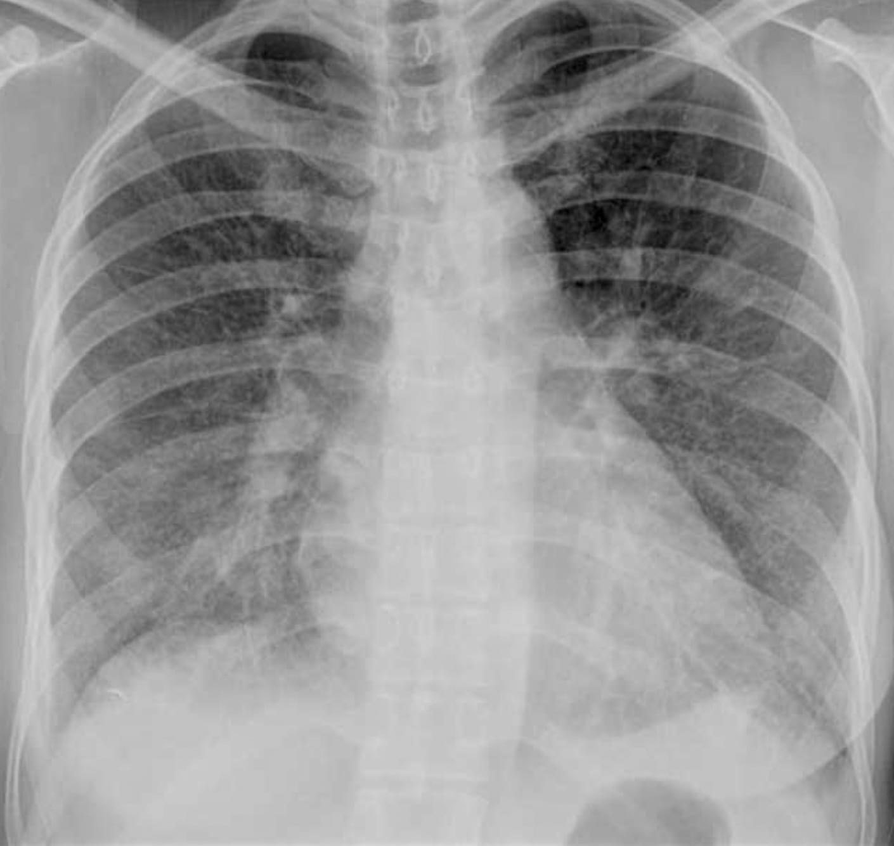

Imaging of Lung Edema
Howard Mann, M.D.
University of Utah School of Medicine
howard.mann@utah.edu
howardmann.us
URL: https://howardm.github.io/ImagingofLungEdema

A Simple Definition of Lung Edema and the Starling Equation
Lung edema is an accumulation of lung water.
The Starling Equation describes the factors determining fluid filtration across the pulmonary capillary.

NDF represents the net driving force for fluid filtration
σ represents a reflection coefficient for movement of large molecules (such as protein) across the capillary wall - from 0 if completely permeable to 1 if impermeable.
Hydrostatic lung edema
Two general causes should be considered:
- left atrial hypertension of any etiology, most commonly:
- diminished left ventricular ejection fraction
- cardiac valvular disease
- hypervolemia
- narrowing and/or occlusions of pulmonary veins

Imaging Findings of Edema
Interstitial Edema
To understand this, we need to review the anatomic constituents of the pulmonary interstitium.
The axial connective tissue compartment is constituted by the bronchovascular sheaths surrounding broncho-arterial bundles and pulmonary veins. The parenchymal compartment is constituted by the alveolar septa (intralobular interstitium) and the peripheral, subpleural interstitium, anatomically continuous with interlobular septa.
When water accumulates in these locations, the corresponding imaging findings are, respectively:
- peribronchial fluid cuffs
- apparent thickening of the interlobar fissures
- septal lines

A Case of Florid Interstitial Edema

Signs of Interstitial Edema
Peri-bronchial fluid cuff
The broncho-arterial bundle—bronchi and arteries run together—is surrounded by a connective tissue sheath This is shown in this animal model-derived micrograph, before and after it is filled with water (***), with a corresponding CT image alongside.


Signs of Interstitial Edema
Interlobular septal edema
These represent interlobular septa, the connective-tissue-bearing structures, separating one lobule from its neighbor, distended with fluid and rendered visible.
Traditionally, the horizontally-oriented, short lines above the lateral costophrenic sulci on frontal radiography are termed Kerley B lines; those in proximity to the hila, Kerley A lines; and those imaged en face, perceptually a reticular-type network, Kerley C lines.

Alveolar edema
This manifests as consolidation, no different from other causes of it.

The so-called bats wing pattern of central, perihilar, symmetric consolidation is actually uncommon.
Hydrostatic Lung Edema and Thoracic Vessels
The distribution of pulmonary blood flow.
In the physiologic state, reflective of cranial-caudal hydrostatic pressure, the vessels—arteries and veins—in the lower lungs are slightly more distended than those in the upper lungs.
When pulmonary blood flow and volume is increased, as in a left-to-right shunt or hypervolemia, the vessels are distended, and equal in caliber from top to bottom.
In chronic—not acute—pulmonary venous hypertension, the upper zone vessels are more distended. This occurs because of pathologic changes—intimal hypertrophy and hyperplasia—that develop predominantly in these vessels over years. The resultant increase in regional vascular resistance results in the redistribution of blood flow.

Source: Milne, et al. The radiologic distinction of cardiogenic and noncardiogenic edema
Hydrostatic Lung Edema and Thoracic Vessels
The distribution of pulmonary blood flow.

A Clinical Example of Hypervolemia
It’s very helpful to have a recent prior examination for comparison.

CT of Acute Lung Injury Edema

Don’t confuse the posterior lung opacities with anything else other than consolidated and —particularly—atelectatic lung. This is potentially so-called recruitable (by different ventilatory strategies) lung.
The concepts of (dorsal) “sponge” and (ventral) “baby” lungs are evocative. The size of the ventral aerated lung in ARDS (with the patient supine) suggests a “baby” lung— as conceptualized by Gattinoni et. al.
This lovely explanatory graphic (Figure 7; page 255) is from the free book An Approach to Mechanical Heart-Lung Interaction by Jon-Emile S. Kenny available here.
There is relatively more lung volume in the dorsal lungs.
Lung Edema—Variations on the Basic Theme
Here are three cases. Let’s try to determine, in each case, whether hydrostatic or acute lung injury edema is present, and the associated pathophysiology.
There is a history of mitral valve replacement.
A cardiac ultrasound report states: “Thrombus is present on the mechanical mitral valve prosthesis.
There is a marked pressure gradient (mean of 24mm Hg) implying thrombotic occlusion of the prosthesis.”

This young ski tourist in Utah developed acute shortness of breath close to the top of his first run.
He was transported to the E.D.
This is a patient in the neurointensive care unit.
Explanation
The “rules” appear to be broken. Case one represents acute lung edema from acute, severe left atrial hypertension. Yet, only minimal interstitial edema is present. Case two is high-altitude pulmonary edema; Case three is neurogenic lung edema.
The explanation for these cases derives from the phenomenon of Stress Failure of Pulmonary Capillaries, a form of acute lung injury, involving the alveolar-capillary barrier. This was elucidated by John West and is nicely depicted in this figure from one of his articles.

This phenomenon is present in both neurogenic and high-altitude pulmonary edema and—importantly— may be spatially heterogeneous in severity and distribution.
A Nuanced Approach to Lung Edema
A continuum of acute lung injury, depicted in this modified graphic from an article by Ketai and Godwin.

Lung Edema in Pulmonary Venous Occlusions
Narrowing and occlusions of veins—large and small—may produce lung edema.
The edema may be diffuse or focal depending on the cause and location.
Here are three illustrative cases.

Diagnosis: Calcified fibrosing mediastinitis
The mediastinal tissue (blue box) encases the right superior pulmonary vein with resultant right upper lobe interstitial edema.
Chronic edema, mostly in the left lower lobe, a consequence of a radiofrequency ablation procedure for atrial fibrillation.
A patient diagnosed with pulmonary arterial hypertension (normal pulmonary artery occlusion pressure).
Findings: Diffuse, bilateral interstitial edema.
Diagnosis: Pulmonary veno-occlusive disease–affecting small pulmonary veins.

Lung Edema from Impaired Clearance of Lung Water. Role of Lymphatics.
- lymph flow easily clears physiologically filtered lung water
- lymphatic obstruction, typically by metastatic tumor–lymphangitic tumor spread–manifests as lung edema
- the edema is typically interstitial, may be focal and asymmetric, and associated with transudative pleural effusions
- lymphangitic tumor spread may be accompanied by other forms of metastases, such as solid nodules
- uncommonly, lymphangitic tumor spread is the first manifestation of cancer
Unexplained, new dyspnea in a healthy female


A Big Summary